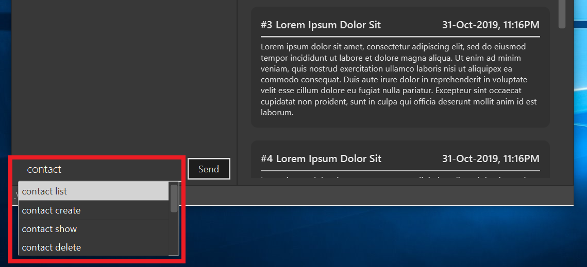
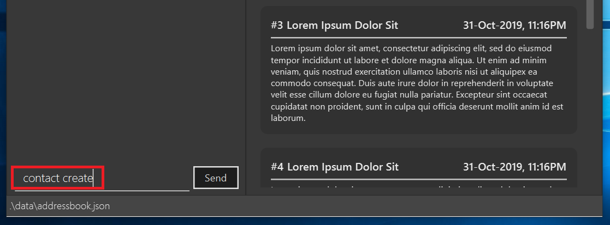
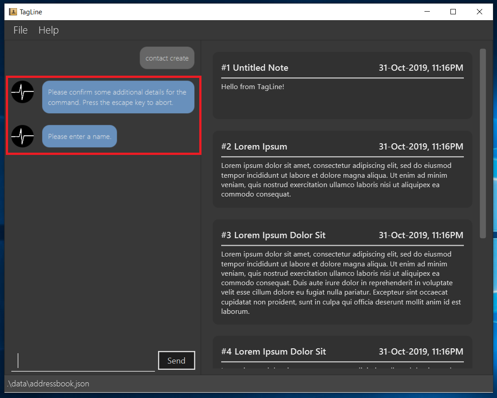
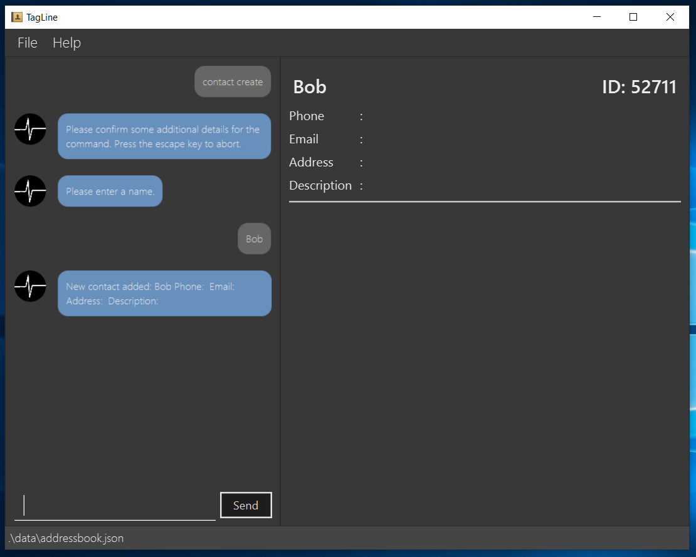
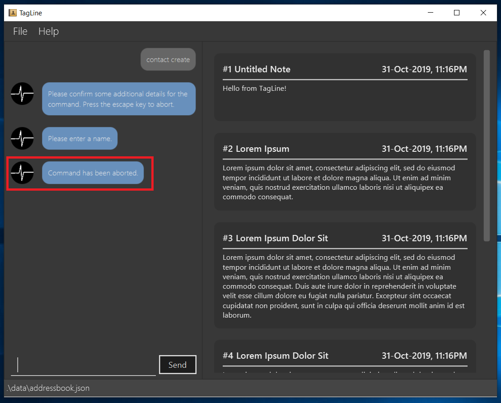

About the project
My team of 5 software engineering students were tasked with enhancing a basic command line interface desktop addressbook application for our Software Engineering project.
We chose to expand the application into a note management application with contact management capabilities called TagLine. In addition to the originally existing operations on contacts, this enhanced application allows users to record and list notes; create groups of contacts; and tag notes with relevant hashtags, contacts or groups.
Below is a screenshot of our project:
My role was to design the UI and write Java code, FXML and CSS for it. The following sections illustrate some more specific enhancements I have made to the UI, as well as some relevant documentation in the user and developer guides related to these enhancements.
Summary of contributions
-
Major enhancement: I added autocomplete for commands in TagLine.
-
What it does: When the user starts typing a command, a list of autocomplete suggestions will be shown below the command box.
-
Justification: This feature benefits new users by allowing them to understand all the possible commands in TagLine.
-
Highlights: I implemented
AutoCompleteNodeusing a search tree, so that it only gets the most relevant suggestions. Additionally, using CSS, I applied a custom skin to the default ControlsFX autocomplete popup. -
Credits: I used the ControlsFX library for the GUI implementation of the autocomplete box.
-
-
Major enhancement: I added user prompting for commands in TagLine.
-
What it does: TagLine can detect if a command entered by the user is missing some information. For example, a user may forget to indicate the name when adding a contact. In that case, the TagLine chatbot will ask the user for the name of the contact.
As an extension, using the same framework, TagLine can request confirmation when performing major changes like clearing the contact or note list.
-
Justification: This feature benefits inexperienced users by allowing them to easily fix mistakes without having to retype entire commands. Also, it allows for an alternative method of inputting commands field by field, which may be preferable to some users.
-
Highlights: This feature required implementing additional interactions between the
Uiand theLogiccomponents, which was done using an intermediate class to pass prompts. I also had to design a new program flow for theUito handle user prompts.To increase user-friendliness, I included messages to tell the user when they are being prompted, and disabled autocomplete when the user enters the response.
For future commands, this feature is easily extensible as it only requires the new
Parserto throw an exception requesting some prompts.
-
-
Minor enhancement: I added the GUI views for listing notes, viewing a single group and listing groups. I also refactored the original contact list to be able to hide empty fields.
-
Minor enhancement: I implemented a chat interface for communicating with the user.
-
Credits: I reused my code from my individual project to build the chat interface.
-
-
Code contributed: [RepoSense report]
-
Other contributions:
-
Project management:
-
Handled releases
v1.1-v1.3(3 releases) on GitHub -
Setup Coveralls
-
-
Enhancements to existing features:
-
Wrote GUI tests to test new and old components of the UI, increasing coverage for the
tagline.uipackage to 65.6%
-
-
Community:
-
Tools:
-
Integrated ControlsFX to the project for the autocomplete feature.
-
Integrated TestFX to the team repo to write and perform GUI tests.
-
Integrated Hamcrest to the team repo to write GUI tests.
-
-
Contributions to the User Guide
Given below are sections I contributed to the User Guide. They showcase my ability to write documentation targeting end-users. |
Learning TagLine
Are you new to TagLine? Or are you prone to making typos? In either case, TagLine has some nifty features to help you out.
Autocomplete
When you enter a command, TagLine will display autocomplete suggestions as you type.
To illustrate, let’s suppose you are trying to create a new contact. However, you only remember that the first keyword is contact! With the autocomplete feature, it is easy to find the correct command. Try following the following steps:
-
Type
contactinto the command box. A list of suggestions will pop up under the command bar. -
Use the arrow keys to navigate to the correct command (optional if using mouse).

-
Press the Enter key or click on the command in the menu. Your command box will now display
contact create.
Note
After typing a command, if the autocomplete menu is still showing, please wait a moment for it to disappear, or click elsewhere on the screen. If you press Enter too quickly, this will cause your command to be overwritten.
Prompts
For some commands, TagLine can prompt you when there is missing important information. Instead of having to type the whole command again, you will only need to fill in the couple of fields you missed.
Let’s take the same example of creating a new contact.
-
Suppose you accidentally pressed Enter too early, and sent the command
contact createas is. -
Maybe you have intended to call this new contact
Bob. Then typeBobinto the command box and press Enter (or Send). Then TagLine would appear like this: -
As can be seen above, TagLine has successfully created a new contact named
Bob.
Aborting an incomplete command
But what if we don’t want to proceed with the command? You can abort the command by pressing the Escape key.
-
After step 1 of the above example, let’s say you no longer want to create a new contact. Press the Escape key.
 -
The incomplete command will not be executed. Now you can continue to enter other commands into the command box.
Note
When given prompts, to minimize inconvenience to you, the autocomplete menu is temporarily disabled. Once prompting is complete or aborted, autocomplete will be re-enabled.
Contributions to the Developer Guide
Given below are sections I contributed to the Developer Guide. They showcase my ability to write technical documentation and the technical depth of my contributions to the project. |
UI component
API : Ui.java
The UI consists of a MainWindow which is made up of four parts, i.e. StatusBarFooter, HelpWindow, ChatPane and ResultPane. MainWindow may also have a PromptHandler which contains a list of Prompt objects (see here for more information). In particular,
-
The
ChatPanemanages text interaction with the user. It usesCommandBoxto read commands andDialogBoxto display commands and feedback. To handle auto-completion,CommandBoxuses anAutoCompleteNodeto provide suggestions. The class diagram for the sub-component is shown below.

-
The
ResultPanedisplays a relevantResultViewbased on the command entered. The following class diagram shows a partial view of the component with only theNoteListResultViewandContactListResultView.

Most of these classes, including the MainWindow itself, inherit from the abstract UiPart class.
The UI component uses JavaFx UI framework. The layout of these UI parts are defined in matching .fxml files that are in the src/main/resources/view folder. For example, the layout of the MainWindow is specified in MainWindow.fxml
The UI component,
-
Executes user commands using the
Logiccomponent. -
Displays feedback and updates the
ResultPaneusingCommandResultin theLogiccomponent. -
Listens for changes to
Modeldata so that the UI can be updated with the modified data.
User Prompting
Description
When the user enters an incomplete command, the command could be missing only a few compulsory fields. Instead of forcing the user to edit the command entirely, TagLine will prompt the user for further details instead.
At this point, the user may abort the command or provide the requested details. When all details are provided, the command is executed.
Implementation
Representing a prompt
The prompting mechanism uses Prompt objects to represent individual queries for additional information. A list of Prompt objects is used to pass information between the Logic and Ui components. Prompt contains the following fields:
-
prefix: The prefix of the missing field (e.g. for acontact createcommand, thenamefield has prefix--n) -
question: A question to ask the user for details regarding the missing information -
response: The response from the user
These fields are accessible through getters and setters in the Prompt class.
Passing the prompts
Given below is an example scenario where the user command has missing compulsory fields.
Step 1: The Ui passes the user’s command to Logic, which finds one or more missing compulsory fields. For each missing field, it creates a new Prompt object with a question. Then it throws a ParseException containing the list of Prompt objects.

Step 2: The Ui receives the list of Prompt objects. For each Prompt, it retrieves the question and obtains the corresponding user feedback using the mechanism here.

Step 3: The Ui passes the original command, together with the processed Prompt objects, back to Logic. Logic then executes the corrected command.

For the full sequence diagram, see the developer guide.
The user can also abort the command by pressing the Escape button. In this case, the Ui will discard the original command and continue to receive further user commands.
Getting responses from the user
To obtain responses to a list of prompts, the UI uses a PromptHandler to indicate the incomplete command that it is currently working on. PromptHandler uses the Iterator design pattern to fill a list of prompts. It implements the following operations:
-
PromptHandler#getPendingCommand: Returns the incomplete command -
PromptHandler#fillNextPrompt: Fills the next unfilled prompt in the list -
PromptHandler#getNextPrompt: Gets the question of the next unfilled prompt in the list -
PromptHandler#isComplete: Returns true if all prompts have been filled -
PromptHandler#getFilledPromptList: Gets the filled prompt list
To allow the Ui to handle user prompts, the sequence of steps taken to handle user input has been modified. To illustrate the program flow, three possible scenarios of user input will be discussed.
-
The user enters some input with missing compulsory fields.
-
The input is passed to
Logic, where aPromptRequestExceptionis thrown. -
MainWindowtakes the list of prompts in thePromptRequestException, and creates a newPromptHandlerin the private fieldpromptHandler. -
MainWindowgets the first prompt question frompromptHandlerand displays it.
-
-
The user is currently being prompted, and enters some input to answer a prompt. There are more prompts remaining.
-
MainWindowhas apromptHandlerwhich is incomplete. It callsfillNextPromptwith the user input. -
MainWindowchecks thatpromptHandleris still incomplete. -
MainWindowgets the next prompt question frompromptHandlerand displays it.
-
-
The user is currently being prompted, and enters some input to answer a prompt. There are no more prompts remaining.
-
MainWindowhas apromptHandlerwhich is incomplete. It callsfillNextPromptwith the user input. -
MainWindowchecks thatpromptHandleris now complete. -
MainWindowcallsgetPendingCommandandgetFilledPromptListofpromptHandler. -
The incomplete command and the filled prompt list are passed to
Logicto execute the command.
-
The cases above are labelled and summarized in the full activity diagram below. The mechanism for aborting commands is done using listeners and not shown below.
Design Considerations
Aspect: Prompt handling method
-
Alternative 1: The
Uifunctions as per before and is unaware of prompting. TheLogickeeps track of the incomplete command and sends prompts back asCommandResultobjects.-
Pros: Decreases coupling between
UiandLogiccomponents -
Cons: Violates the Single Responsibility Principle for
CommandResult, i.e.CommandResultmay now have to change because of changes to the prompting featureUihas no way to know if it is currently handling prompting, so it cannot abort prompts, disable/enable autocomplete or display special messages.
-
-
Alternative 2: The
Logiccomponent keeps track of the incomplete command and throws an exception containing prompts to theUi.-
Pros: Greater flexibility for
Uito handle prompts, e.g. aborting -
Cons:
LogicManagerhas to keep track of the command entered, rather than simply acting as a bridge between theUiand theParsersub-component. Increases number of potential points of failure and decreases maintainability.
-
-
Alternative 3: The
Logiccomponent requests prompts from theUi. TheUicomponent keeps track of the incomplete command.-
Pros: Greater flexibility for
Uito handle prompts, e.g. aborting
-
Alternative 3 was chosen as it allows for flexibility in prompt handling while having Ui be the sole component responsible for collecting prompt responses.
Aspect: Command correction method
-
Alternative 1: The
Uiupdates the command with the user’s responses by adding the new data to the command string.-
Pros: No need to overload
Logic#execute()andParser#parse()methods -
Cons: Requires
Uito know where to insert preambles, and increases coupling betweenUiandLogiccomponents (asUinow needs to know and follow the command format)
-
-
Alternative 2: The
LogicManagerupdates the command with the user’s responses by adding the new data to the command string.-
Pros: No need to overload
Parser#parse()method -
Cons: Requires
LogicManagerto know where to insert preambles, and reduces flexibility of prompting
-
-
Alternative 3:
TaglineParserand the individual parser classes handle the list ofPromptobjects when parsing the command-
Pros: Easily handles preambles, and also allows greater extensibility of the prompt feature, e.g. can have the user fix incorrect commands or confirm actions
-
Cons: Requires changing multiple
Parserclasses, may increase code duplication
-
Alternative 3 is chosen as it allows the confirmation messages for the clear commands to be implemented easily.
For Alternative 1 and 2, implementing confirmation would inadvertently add an alternative command to directly perform the action. To illustrate, suppose we check for confirmation for the contact clear command by having the user type YES. Then due to the mechanism of the prompting feature, we will inadvertently include a new command like contact clear <prefix> YES. Since this is unintuitive, alternative 3 was chosen instead.